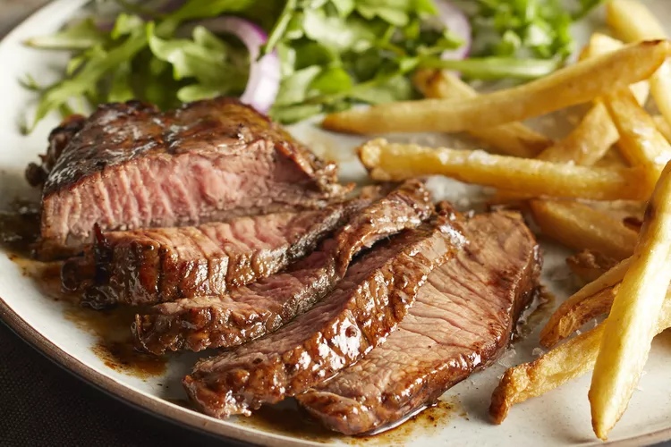

Best Steak Marinade

Description
Learn how to make the Best Steak Marinade in Existence
Ingredients
To make this recipe you are going to need:
- ½ cup olive oil
- ⅓ cup soy sauce
- ⅓ cup fresh lemon juice
- ¼ cup Worcestershire sauce
- 3 tablespoons dried basil
- 1 ½ tablespoons garlic powder
- 1 ½ tablespoons dried parsley flakes
- 1 teaspoon ground white pepper
- 1 teaspoon dried minced garlic (Optional)
- ¼ teaspoon hot pepper sauce (Optional)
Steps
Follow these steps to make make the Best Steak Marinade in Existence:
- Place olive oil, soy sauce, lemon juice, Worcestershire sauce, basil, garlic powder, parsley, white pepper, minced garlic, and hot pepper sauce in a blender; blend on high speed until thoroughly combined, about 30 seconds.
Homepage